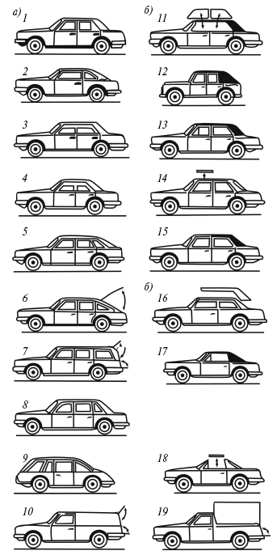

Характеристики кузовов легковых автомобилей.
Кузов является частью автомобиля, предназначенной для размещения водителя, пассажиров и груза. В зависимости от внешних характеристик кузова автомобилей делятся на следующие типы.
1. Бескапотный кузов является однообъемным пассажирским кузовом, центр рулевого управления которого находится перед передней частью автомобиля.
2. Однообъемный кузов состоит из объединенных в одно целое пассажирского отсека и отсеков двигателя и багажа; двухобъемный – из двух отсеков: отсека для двигателя или багажа и отсека для пассажиров и багажа или двигателя; трехобъемный – из трех отсеков: отсека для двигателя или багажа, отсека для пассажиров и отсека для багажа или двигателя.
3. Открытый кузов может быть с мягким складывающимся тентом или со съемной жесткой крышкой, закрытый имеет жесткую несъемную крышу.
4. Несущий кузов одновременно выполняет функции несущей системы, к которой крепятся все узлы и агрегаты автомобиля, статическая нагрузка и реакции рессор воспринимаются преимущественно его основанием.
5. Полунесущий кузов жестко соединен с рамой и воспринимает вместе с ней часть нагрузок; рамный кузов эластично соединен с рамой, причем статическая нагрузка и реакция рессор воспринимаются преимущественно рамой.
6. Сменный кузов является специализированным кузовом; он быстро устанавливается взамен другого на шасси грузового автомобиля.
7. Комбинированный кузов – это кузов легкового автомобиля с частично открываемой крышей.

Рис. 4. Типы кузовов легковых автомобилей:
а) закрытые:
1 – седан; 2 – купе; 3 – хардтоп-седан; 4 – хардтоп-купе; 5 – фастбек; 6 – комби; 7 – универсал; 8 – лимузин; 9 – бескапотный кузов; 10 – фургон;
б) открытые:
11 – фаэтон; 12 – фаэтон-универсал; 13 – кабриолет; 14 – кабриолет-хардтоп; 15 – родстер; в) комбинированные: 16 – брогам; 17 – ландо; 18 – тага; 19 – пикап
Официальным документом, определяющим типы кузовов легковых автомобилей, является отраслевой стандарт, утвержденный 1 января 1985 г. Вот выдержки из этого стандарта.
Брогам– пассажирский кузов с открывающейся частью крыши над передним рядом сидений.
Кабриолет– пассажирский кузов с мягким складывающимся тентом и опускными боковыми окнами.
Кабриолет-хардтоп– пассажирский кузов со съемной жесткой крышей.
Комби– двухобъемный кузов легкового автомобиля, имеющий заднюю дверцу и предназначенный для перевозки пассажиров или грузов (при сложенных задних сиденьях).
Купе– двухобъемный или трехобъемный пассажирский закрытый кузов с двумя боковыми дверцами и со стесненными посадочными размерами задних сидений.
Лимузин– пассажирский закрытый кузов, имеющий перегородку за первым рядом сидений, с открывающимся окном.
Лимузин представительский – легковой автомобиль высшего класса с наивысшей комфортабельностью и увеличенным салоном, иногда с дополнительными открывающимися сиденьями.
Ландо– комбинированный пассажирский кузов с открывающейся частью крыши над задними рядами сидений.
Пикап– грузо-пассажирский кузов с открытой платформой для перевозки грузов и кабиной водителя, отделенной от грузовой платформы стационарной перегородкой.
Родстер– пассажирский двухместный кузов со складывающимся мягким тентом.
Седан– трехобъемный пассажирский кузов с двумя или четырьмя (шестью) боковыми дверцами.
Тарга– комбинированный пассажирский кузов со съемной средней частью крыши.
Универсал– двухобъемный кузов с задней дверцей, имеющий постоянное грузовое помещение, не отделенное от пассажирского салона стационарной перегородкой (задний ряд или ряды сидений складывающиеся).
Хардтоп-седан– кузов-седан (трехобъемный) без средней боковой стойки при опущенных боковых стеклах.
Хардтоп-купе– кузов-купе (двух-, трехобъемный) без средней боковой стойки при опущенных боковых стеклах.
Фастбек– двухобъемный пассажирский кузов с двумя или четырьмя дверцами и плавно спускающейся назад крышей.
Фаэтон– пассажирский кузов с мягким складывающимся тентом и со съемными боковыми окнами.
Фаэтон-универсал– грузо-пассажирский кузов, предназначенный для перевозки пассажиров или грузов, с мягким складывающимся или съемным тентом и со съемными боковыми окнами (надставками дверей).
Фургон– закрытый кузов с перегородкой, отделяющей помещение для водителя от помещения для перевозки грузов.